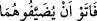

Kasas, 28/25). Bunun cevabı şudur: Mahrûmiyet, muhâlefet sebebiyledir. Çünkü o
Allah’ın kendi hâlini bilmesiyle yetinmeyip mahlûka îtimada meyletti. Böylece hâdis ve
sonradan olan bir varlıkta sükûn bulmak istedi. Şuayb (a.s.)’ın kızları ile olan kıssada
ise tevekkül üzere hareket etti. Yaratılmışlar ile Rabbi arasına vâsıta sokmadı, bilâkis
Hakk’ın kapısına yöneldi ve şöyle dedi: “Ey Rabbim! doğrusu bana indireceğin bir
hayra muhtacım.” (el-Kasas, 28/24)
Hâfız der ki:
Senin dergâhına fakir ve hasta geldim, merhamet eyle
Ki senin muhabbetinden başka sana armağanım yok
Yine o şöyle der:
Biz fakr ve kanâat şerefini bırakmayız
Padişaha söyle, rızık mukadderdir
“Ancak köy halkı onları misafir etmekten kaçındılar.” Hz. Peygamber (s.a.)’in şöyle
buyurduğu rivâyet edilmiştir. “Onlar kınanmış, cimri bir belde halkı idiler.”[216]
Şeyh Sa‘dî der ki:
Büyükler misafiri can ile besler
Ki iyilik nâmını âleme sürerler
Garibe âşinâ, seyyah fakîre dost ol
Ki seyyah iyi nâmı celb eder
Harab olur o memleket yakın zamanda
Ki o memlekette garibin gönlünü incitirler
Misafirin gönlünü hoş tut, ey aziz
Misafirlerin fitnesinden de sakın
Hikâyeye göre bu âyet nâzil olunca bu bölge halkı Rasûlullah (s.a.)’e bir yük altın
getirdiler ve şöyle dediler: “Bu âyetteki “bâ” harfini “tâ”ya çevir, bunu sana verelim.”
dediler. Yâni, “
Feebev en yudayyifûhümâ” ifâdesini “
Feetev en yudayyifûhümâ (onları misafir etmeye geldiler)” yapmasını istediler ve:
“Amacımız cimrilik ayıbını üzerimizden uzaklaştırmaktır.” dediler. Rasûlullah (s.a.)
bunu kabul etmedi ve şöyle buyurdu: “Onun değiştirilmesi, Allah’ın kelâmına yalan
sokulması demektir. Bu da O’nun ulûhiyyetini zedeler.” et-Tefsîru’l-Kebîr’de böyle
denilmektedir.
“Derken orada yıkılmak üzere bulunan bir duvarla karşılaştılar.” Kâşifî der ki:
“Onlar aç olarak şehrin dışında kaldılar. Sabahleyin erkenden oradan yola koyuldular.
Şehrin kenarında bir tarafa eğilmiş bir duvar buldular.”